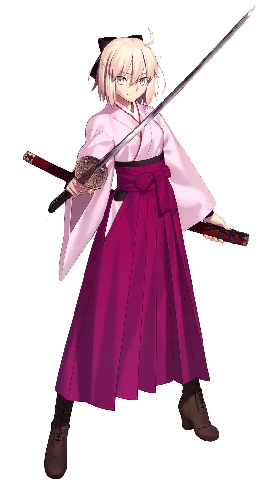

Top 3 - Okita Souji
Okita Souji; captain of the First Unit of the Shinsengumi, a public order organization that was mostly active in the Kyoto of the Edo period's closing days. Even among the Shinsengumi, which was feared as a band of master swordsmen, the one admired as the strongest genius swordsman was Okita.
Top 3 - Katsushika Hokusai
You simply do not look like Hokusai, you say?
Well sorry for this lovely figure, but if you want to know the circumstances you better listen to what I say!
Top 3 - Mashu Kyrielight
The figure of Mash Kyrielight, a Chaldean clerk, who underwent a possession union with a Servant. A so-called Demi-Servant.

